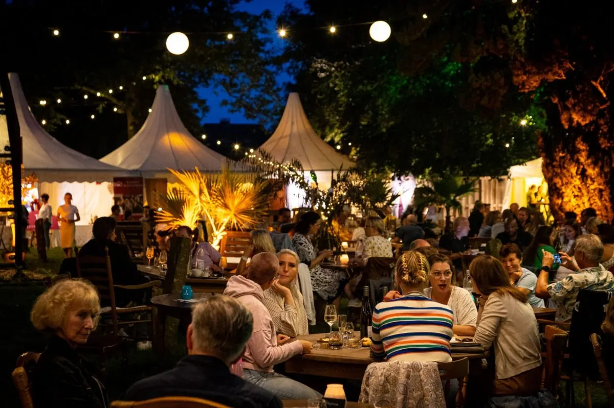

Dit is een testomgeving. De echte pagina staat op
www.nijmegenonline.nl
.
Kom in contact
Adverteren
Vacatures
Home
Inspiratie opdoen
Gidsen
Bedrijvengids
Agenda
Home
›
Agenda
› Kloster Graefenthal
Evenementen bij Kloster Graefenthal
Maasstraße 48, 47574 Goch, Deutschland
Binnenkort
31
okt
Halloween festival
31 okt – 1 nov
Kloster Graefenthal
27
nov
Kerstmarkt Klooster Graefenthal
27 nov – 6 dec
Kloster Graefenthal
Eerder bij Kloster Graefenthal
14
aug

Niederrheinische Weinfest Kloster Graefenthal
14 aug 2026
Kloster Graefenthal